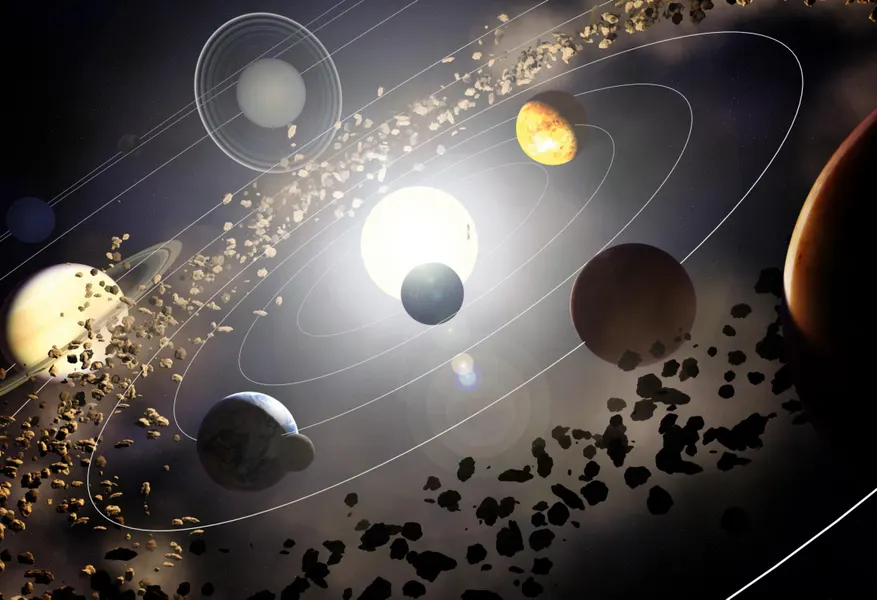
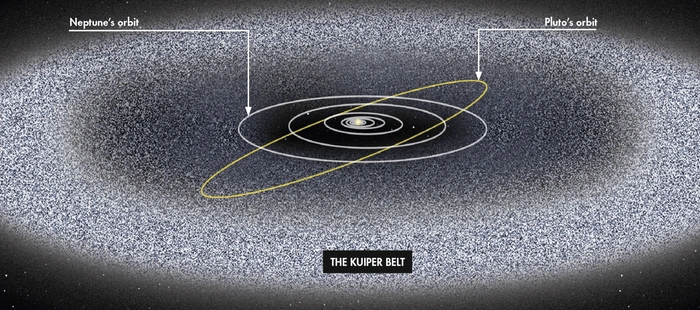

The Sun
The Sun is a giant ball of hot gas that gives us light and warmth. It's the center of the Solar System and everything revolves around it!
Planets
There are 8 planets: Mercury, Venus, Earth, Mars, Jupiter, Saturn, Uranus, and Neptune. Some are rocky, some are gas giants!
Asteroid Belt
Between Mars and Jupiter lies a belt full of rocky objects. Some famous asteroids are Ceres, Vesta, Pallas, and Hygiea!
Kuiper Belt
After Neptune, there's a wide area with icy objects like Pluto. It's called the Kuiper Belt!
Oort Cloud
Far, far away, the Oort Cloud is a giant bubble of icy bodies surrounding our Solar System. It’s where some comets come from!
Moons
Natural satellites that orbit planets. Earth has one, but Jupiter has over 90!

Solar System

Asteroid Belt

Kuiper Belt